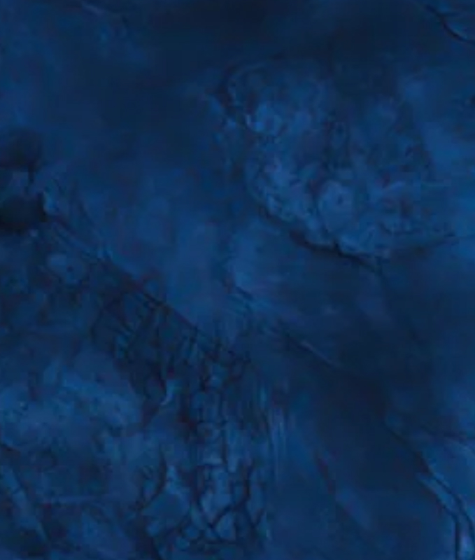

Footics - Pitch Background & Overlay Demo
Live Preview
Figma再現:
#0B303E (Fill/Overlay)

クイックプリセット
🎯 Figma設定 (#0B303E)
🧪 Figma乗算 (Multiply)
🌌 深黒ネイビー (85%)
⚫ 完全ブラック
オーバーレイ設定
オーバーレイ色
#0b303e
不透明度
100%
合成モード
Overlay (オーバーレイ)
Normal (通常)
Multiply (乗算)
Screen (スクリーン)
Hard Light
ピッチライン設定
ライン色
#ffffff
ライン太さ
2.5px
ライン不透明度
100%
テクスチャ画像設定
画像の表示
表示 (Marble)
非表示 (ベタ塗りのみ)
アスペクト比プレビュー
16:9 (横長)
9:16 (縦長)
4:5 (X縦長)
1:1 (正方形)